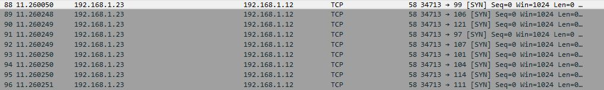
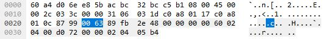
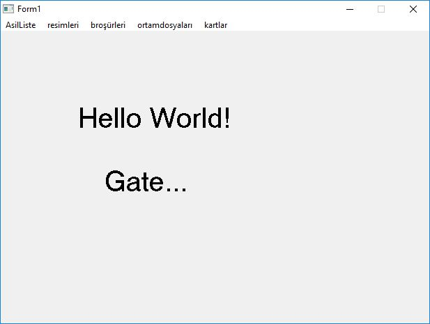

Lostar'ın siber güvenlik yaz kampı için katılımcılara özel olarak düzenlediği ctf çözümlerini anlatacağım.İlk başta 14 soru vardı daha sonradan 2 soru daha eklendi ve totalde 16 sorumuz vardı.
Başlıklar şöyle;
Web:
Forensic:
Network:
Misc:
Flag biçimi şu şekildeydi: lostarctf_{flag}
Soruda bize bir adres vermişlerdi ve verdikleri adrese gittiğimizde ekrana şöyle bir mesaj çıkıyordu.
Sen muratlostar degilsin !
Bizden bir bilgi almadığına göre header bilgilerine bakmamız lazımdı. User-agent bilgimizi user agent switcher
gibi bir araçla muratlostar
olarak değiştirince flag ortaya çıkıyordu.
aferin :D - bub1rg1zl1b1lg1
flag:
lostarctf_{bub1rg1zl1b1lg1}
Bu sorudada bize bir adres verilmişti. Verilen adreste şöyle bir header bilgisi vardı.
flagishere:gcabw_npkvrjce_gsafsi
Flagın şifrelenmiş olduğu anlaşılıyordu. https://gchq.github.io/CyberChef
adresi üzerinden vigenere decoder'ı seçip flag bilgisini girip anahtar kısmınada flagishere
yazınca flagımız ortaya çıkıyordu.
flag:
lostarctf_{bravo_vigenere_akiyor}
Bu soruda bize bir ip adresi verilmişti ipucuda yoktu. Adrese girmeye çalışınca hiçbir sayfa açılmıyordu. Ip adresini nmap taramasına sokunca şöyle bir sonuç çıktı.
PORT STATE SERVICE 22/tcp open ssh 25/tcp filtered smtp 808/tcp open ccproxy-http
Böylece 808.portun http isteklerine açık olduğunu anlamış oluyorduk. Ip adresine 808. port üzerinden bağlanınca ekrana Lostar
çıktısını veriyordu. İlk başta flagın bu olduğu akla geliyordu ancak flag bu degildi. Nikto ile Ip adresini 808. port üzerinden taratınca nikto bize Ip adresinin bir robots.txt
dosyasına sahip olduğunu söylüyordu. robots.txt dosyasının içeriği şöyleydi:
User-agent: * Disallow: /wp-admin/ Disallow: /wp-includes/ Diallow: /hamdi Diallow: /lostar.html
hamdi dizini ilgi çekici olsada öyle bir dizine ulaşılamıyordu. Bu adresleri tek tek deneyice varlığından emin olduğumuz tek bir adres kalıyordu lostar.html
çünkü url'den bu adrese bağlanmak istenildiğinde bağlantı resetleniyordu. Bilinçli olarak bu adrese bağlanmamız engelleniyordu. Ancak çözüm basitti, url encode edilerek sayfaya ulaşılabilirdi. Url encode karakterlerine bakılarak adresi yeniden düzenlediğimizde adrese erişebiliyorduk.
lostar%2ehtml
Adrese gittiğimizde ekrana flag_bu_degil
yazıyordu. Sayfa kaynağını görüntülediğimizde ise html açıklama satırı olarak flag konulmuştu.
flag:
lostarctf_{aferinsana_iptables_bypass}
Dosya: dit
Çözüm: Göster/Gizle
Öncelikle dosyanın ne tür bir dosya olduğunu anlamak için file
ile inceleyoruz
Bu soruda bir ses dosyası verilmişti daha doğrusu bir numara tuşlanma sesiydi.
http://dialabc.com/sound/detect/ sitesi üzerinden hangi numaraların tuşlandığı bulunabilirdi.
Sonucumuz şöyle oluyordu: 567827
Bu sayıların birer harfe tekabul ettiği belliydi. Kelime tahmin edilerekte bulunabileceği gibi online sistemler üzerindende uygun kelimeyi bulmak denenebilirdi.
http://www.dialabc.com/words/search/
Siteleri üzerinden 567827 sayısının tekabul ettiği kelimeler incelenebilirdi. Sitelerden bakıldığında göze hemen lostar
kelimesi çarpıyordu.
flag:
lostarctf_{lostar}
Dosya: flag.zip
Çözüm: Göster/Gizle
Zip dosyası şifreliydi, ancak fazlada zorlamamak için şifreyi dosya adı ile aynı koymuşlardı.
zip şifresi: flag
Zip dosyası içerisinde flagMi.dat
adında bir dosya vardı.
# cat flagMi.dat buradaDeğil
Dosya içeriğine baktığımızda flagın orada olmadığını anlıyorduk. Yanlış yerdeydik. Birşeyi kaçırmıştık. Zip dosyasına binwalk ile bakmamız gerekiyordu.
# binwalk flag.zip DECIMAL HEXADECIMAL DESCRIPTION -------------------------------------------------------------------------------- 0 0x0 Zip archive data, encrypted at least v1.0 to extract, compressed size: 25, uncompressed size: 13, name: flagMi.dat 189 0xBD End of Zip archive 211 0xD3 PNG image, 1000 x 600, 8-bit/color RGBA, non-interlaced
binwalk ile zip dosyasına baktığımızda zip dosyasının içerisinde bir png dosyası olduğunu görüyoruz.
dd ile png dosyasını çıkartıyoruz.
# dd if=flag.zip of=resim.png skip=211 bs=1
Png dosyasını açtığımızda beyaz arkaplan üzerinde siyah renkte FlagBurada!
yazıyordu. Ancak flag bu değildi. Ekranı hafifçe eğince gözüken siyah yazının altında küçük font ile yazılmış gri tonunda bir yazı vardı flag oydu.
flag:
lostarctf_{tamdaBurada}
Dosya: lostar
Çözüm: Göster/Gizle
Verilen dosyaya file ile bakınca dosyanın bir .pcap dosyası olduğu anlaşılıyordu.
# file lostar lostar: pcap-ng capture file - version 1.0
Wireshark ile dosyayı açıp göz gezdiriyoruz. Ve ilk olarak yapmamız gerekeni yapıyoruz. Dosyanın istatistiklerine bakıyoruz. Statistic -> Capture file statistic yolunu izliyoruz. Çıkan ekranda elimizdeki dosyanın iki pcap dosyası ile birleştirilidiği anlaşılıyor. Capture file comments kısmında ise birleştirilen dosyaların isimleri yer alıyordu.
File1: flagbudur.pcap File2: lostar_kamp.pcap
İki dosyada merge edildiğinden flagımızında merge edilmesi gerekiyordu. Dosya isimlerini birleştirdiğimizde flagımıza ulaşılıyorduk.
flag:
lostarctf_{flagbudurlostar_kamp}
Dosya: system32.dll
Çözüm: Göster/Gizle
Bu soru sonradan eklendi. Verilen dll dosyasını binwalk ile incelediğimizde sonuç şu şekilde oluyordu.
# binwalk system32.dll DECIMAL HEXADECIMAL DESCRIPTION -------------------------------------------------------------------------------- 0 0x0 Microsoft executable, portable (PE) 1036 0x40C JPEG image data, EXIF standard 1048 0x418 TIFF image data, big-endian, offset of first image directory: 8 689252 0xA8464 Microsoft executable, portable (PE) 691060 0xA8B74 XML document, version: "1.0" 691140 0xA8BC4 Unix path: /www.microsoft.com/schemas/ie8compatlistdescription/1.0"> 691300 0xA8C64 JPEG image data, JFIF standard 1.01 691330 0xA8C82 TIFF image data, little-endian offset of first image directory: 8 691436 0xA8CEC JPEG image data, JFIF standard 1.01 710084 0xAD5C4 PNG image, 177 x 61, 8-bit/color RGB, non-interlaced 710125 0xAD5ED Zlib compressed data, default compression 718388 0xAF634 XML document, version: "1.0" 718468 0xAF684 Unix path: /www.microsoft.com/schemas/ie8compatlistdescription/1.0">
dll dosyamızın içerisinde jpeg ve png dosyaları olduğunu anlıyoruz.
Png dosyalarını export edince anlamlı bir veri elde edemiyorduk. Ancak jpeg dosyalarını export ettiğimizde flag bir jpeg dosyasında beliriyordu.
# binwalk system32.dll -D jpeg
binwalk ile system32.dll dosyasının içerisindeki tüm jpeg dosyalarını export ediyoruz. A8C64
dosyasında flagımızı görüyorduk.
flag:
lostarctf_{res_hacker_akar}
Dosya: lostar.raw.tar.gz
İpucu: İstediğim adrese ulaşamıyorum.
Çözüm: Göster/Gizle
Verilen tar.gz dosyasını çıkartıyoruz. İçerisindeki lostar.raw
dosyasına binwalk ile baktığımızda bunun bir ram imajı olduğunundan emin oluyoruz. Burda ipucundan yola çıkılarak bakılması gereken yer hosts dosyası olacaktı.
Volatility ile hosts dosyasını buluyoruz
# volatility -f lostar.raw filescan | grep hosts Volatility Foundation Volatility Framework 2.5 0x00000000017b0160 1 0 R--rwd \Device\HarddiskVolume1\WINDOWS\system32\drivers\etc\hosts
Belki hosts dosyasında birşey vardır diyerek hosts dosyasını export ediyoruz.
# volatility dumpfiles -f lostar.raw -Q 0x00000000017b0160 -D /
hosts dosyamızı ram imajından / dizinine çıkartıyoruz. cat ile dosya içeriğini okuduğumuzda karşımıza base64 ile encode edilmiş bir veri çıkıyor.
# cat file.None.0x812acd08.dat aGFja1RoZVBsYW5ldA
Bu değeri base64 ile decode ettiğimizde flag değerine ulaşıyoruduk.
# base64 -d file.None.0x812acd08.dat hackThePlanet
flag:
lostarctf_{hackThePlanet}
Dosya: wireless.cap
İpucu: ZyXEL modemim çok ısındı :/ Kim bilir ne kadar zamandır aktif :S
Çözüm: Göster/Gizle
Soru adındanda anlaşıldığı gibi bizden uptime süresini istiyor. Airodump-ng
aracı ile bunu kolaylıkla öğrenebilirdik.
# airodump-ng --uptime -r wireless.cap CH 0 ][ Elapsed: 12 s ][ 2017-07-14 18:49 ][ Finished reading input file wireless.cap. BSSID PWR Beacons #Data, #/s CH MB ENC CIPHER AUTH UPTIME ESSID 4C:9E:FF:4C:2A:44 0 1 1 0 6 54e WPA2 CCMP PSK 6d 21:48:34 TTNET_ZyXEL_77YC C4:07:2F:68:C7:CC 0 1 0 0 11 54e WPA2 CCMP PSK 1d 08:46:28 SUPERONLINE F8:1A:67:55:6B:3F 0 1 0 0 2 54e WPA2 CCMP PSK 3d 18:20:02 MRTSBHOMR 14:CC:20:A8:7F:26 0 1 0 0 1 54e WPA2 CCMP PSK 22d 02:25:56 asbm27
ZyXEL marka AP'nin 6 gün 21 saat 48 dakikadır açık olduğunu görüyoruz.
flag:
lostarctf_{6d 21:48:34}
Dosya: lostargame.pcap
İpucu: Birisi veri kaçırmaya çalışıyor ?
Çözüm: Göster/Gizle
Verilen dosyası wireshark ile incelemeye koyuluyoruz. Birinin veri kaçırdığını düşünüyoruz haliyle. Http filtresi uyguladığımızda tek bir istek çıkıyor oda sertifika için. Burdan http üzerinden bir veri gönderilmediği anlaşılıyor. Wireshark ile inceleyeme başlıyoruz. Düzenli olarak 192.168.1.23 ipsi üzerinden 192.168.1.12 ipsinin farklı farklı portlara TCP SYN paketleri gönderilmiş. Dikkatimizi buraya yönlendiriyoruz.
Dikkatimizi çeken nokta şu ki 192.168.1.23 sürekli SYN paketini yollayıp duruyor. Her paketin TCP kısmına bakınca her pakette gönderilen karakterin değiştiği görünüyor.
Bu karakterleri not alınca sonuç olarak elimizde şu karakterler oluyor: cjyakehro
Şimdi burdan anlamlı bir veri çıkarmaya çalışırsak içerisinde hacker
kelimesinin geçtiğini çok rahat bir şekilde görebiliyoruz.
Kalan harflerden jyo
ise joy
kelimesi çıkıyor. Sonuç olarak flagımızı bulmuş oluyoruz.
flag:
lostarctf_{hackerjoy}
İpucu: Belirlediğiniz bir zaman yada zaman diliminde belirlediğiniz komut, script yada uygulamanın çalışmasını sağlarsınız.
Çözüm: Göster/Gizle
Linux sistemlerde zamanlanmış görevleri ayarlamak için crontab
kullanılır.
lostarctf_{crontab}
İpucu: Windows sistemlerde komut satırını temizlemek amacı ile hangi komut kullanılır?
Çözüm: Göster/Gizle
Windows terminal ekranını cls
komutu ile temizleriz.
lostarctf_{cls}
İpucu: Arch işletim sisteminin paket yöneticisinin ismi nedir ?
Çözüm: Göster/Gizle
Arch linux işletim sisteminin paket yöneticisi pacman packet manager
lostarctf_{pacman}
İpucu: Windows sistemlerde ekran klavyesinin ismi nedir?
Çözüm: Göster/Gizle
Ekran klavyesini başlatıp daha sonra görev yönetici üzerinden bakılarak öğrenilebilirdi.
lostarctf_{osk.exe}
Dosya: pokemon.exe
İpucu: Programı yazanın en çok sevdiği pokemon hangisidir?
Çözüm: Göster/Gizle
Program GUI'e sahip bir C/C++ programıydı. Şöyle görünüyordu:
Ancak hiçbir özelliği çalışmıyordu. Programı IDA ile açtığımda kodların obfuscate edildiğini gördüm. Hiçbir strings'e ulaşamıyorduk. Aslında soru misc sorusuydu reverse'e gerek yoktu. O yüzden daha basit düşünmek gerekiyordu. Reverse ile birşeye ulaşamıyacaktık. Cevap menude saklıydı. Menudeki kelimelerin baş harfleri bize cevabı veriyordu.
lostarctf_{Arbok}